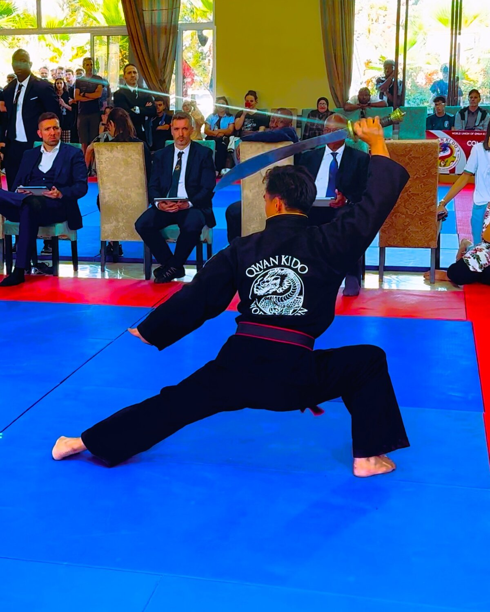
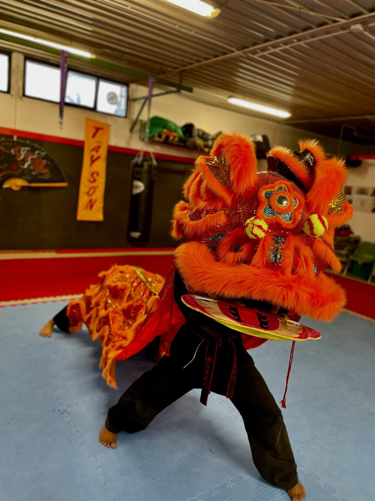

Parliamone di persona.
Il modo più diretto.
Il canale preferenziale per organizzare una lezione di prova è il telefono. Una chiamata o un messaggio WhatsApp permettono di individuare subito la fascia e l'orario adatti.
In alternativa, i canali social sono presidiati: su Facebook e Instagram rispondiamo direttamente.
Cosa portare alla prima lezione: abbigliamento comodo (tuta o simili) e un paio di scarpe da interno pulite. Per i minori è sufficiente arrivare accompagnati.
- Telefono
- +39 331 6917268
- Indirizzo del club
- c/o Accademia Pugilistica KBK
Via Rovereto 3/A
27029 Vigevano (PV) - Qwan Ki Do – Tay Son Vigevano
- @qwankidotayson
- qwankido.vigevano@gmail.com
Cosa succede da noi.



Le cose che ci chiedono più spesso.
Da che età si può iniziare?
Il corso motricità è pensato per bambini di 4–6 anni (La via del Panda). Dai 6 anni in poi si entra nel percorso tecnico vero e proprio, con il corso bimbi fino ai 13 anni e il corso adulti dai 13 in avanti. Non ci sono limiti di età superiori: abbiamo praticanti di ogni fascia.
Serve essere già in forma o avere esperienza marziale?
No, e anzi è normale arrivare senza esperienza. Il programma è strutturato per accogliere principianti e farli progredire nel rispetto dei loro tempi. La condizione fisica si costruisce dentro il percorso, non è un prerequisito.
Qual è la differenza con altre arti marziali (karate, taekwondo, kung fu cinese)?
Il Qwan Ki Do è un kung fu di matrice vietnamita, con un proprio repertorio tecnico, un proprio ordinamento di gradi, un proprio studio delle forme e delle armi tradizionali. Condivide con altre arti marziali principi generali, ma ha un'identità precisa. La risposta più onesta è: vieni a vedere una lezione, la differenza si nota subito.
Serve un certificato medico?
Sì, per frequentare oltre la lezione di prova è necessario un certificato medico sportivo. Per l'attività non agonistica è sufficiente quello rilasciato dal medico di famiglia. Per chi decide di fare gare serve un certificato agonistico.
Quanto dura mediamente un percorso?
Il Qwan Ki Do è un'arte marziale tradizionale: non si impara in una stagione. I primi gradi si ottengono nel giro di qualche anno di pratica costante. Il percorso fino alla cintura nera richiede diversi anni ed è progressivo. Chi si iscrive pensando a un obiettivo di breve periodo probabilmente non è nel posto giusto.
Le gare sono obbligatorie?
No. L'agonismo è una possibilità, non un obbligo. Molti praticanti non gareggiano mai e seguono comunque un percorso completo fino ai gradi alti. Chi vuole competere trova un supporto tecnico serio.
Bambini e adulti si allenano insieme?
Gli allenamenti ordinari sono separati per fascia d'età. Ci sono però momenti — stage, eventi, saluti di fine anno — in cui il club si riunisce tutto insieme. È una delle cose che rende il gruppo quello che è.
Dove trovarci.
Il club ha sede presso l'Accademia Pugilistica KBK, a Vigevano. La struttura è raggiungibile con mezzi propri e con i mezzi pubblici. Per i genitori che accompagnano i bambini è disponibile un'area attesa interna.
Via Rovereto 3/A — Vigevano (PV)
Apri la mappa nel tuo dispositivo per ottenere le indicazioni stradali personalizzate.
Apri in Google Maps →